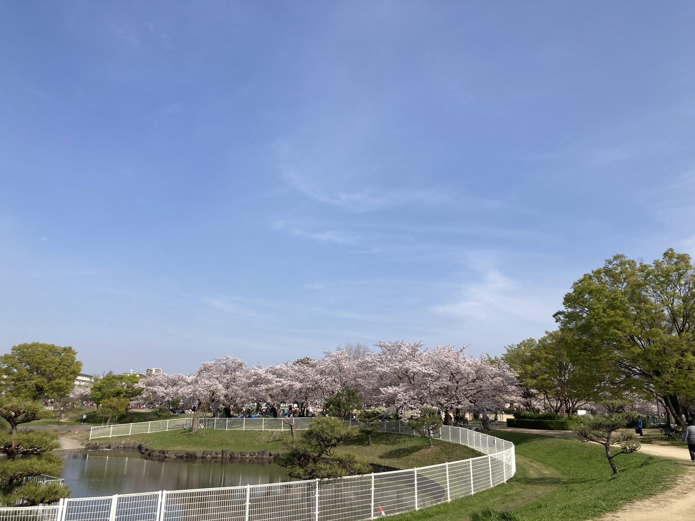
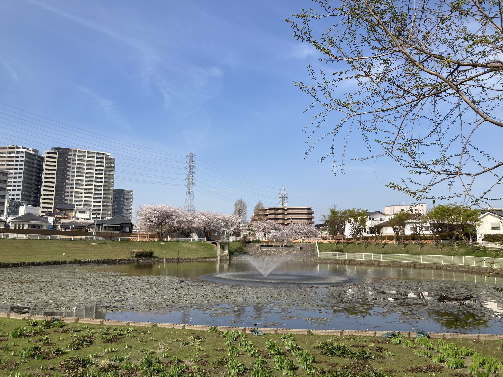
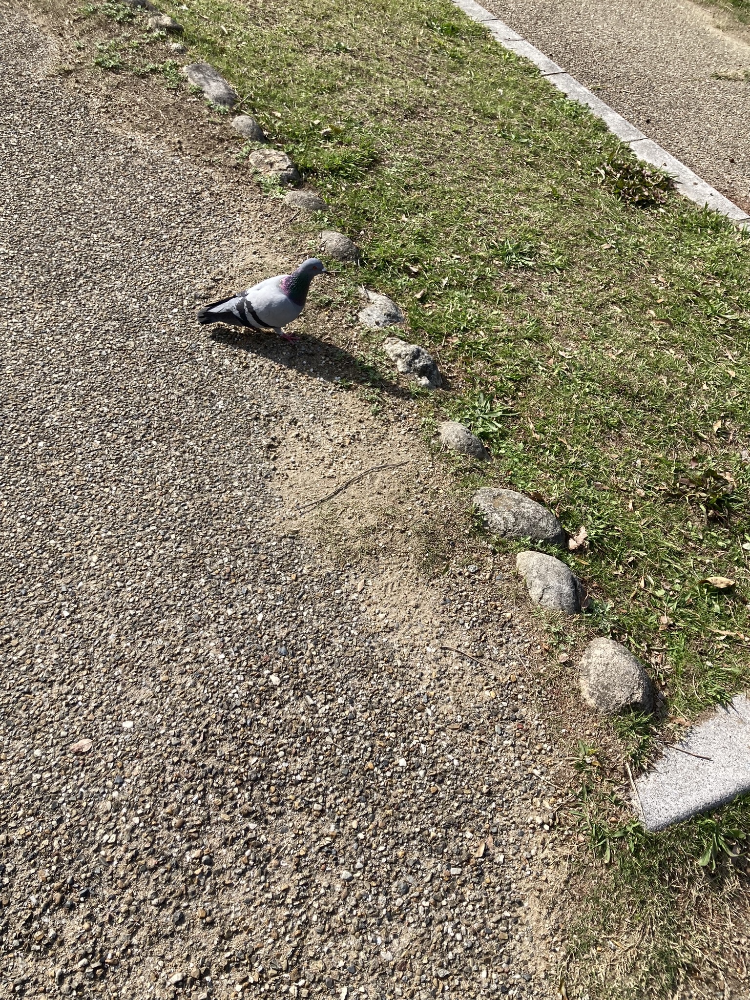
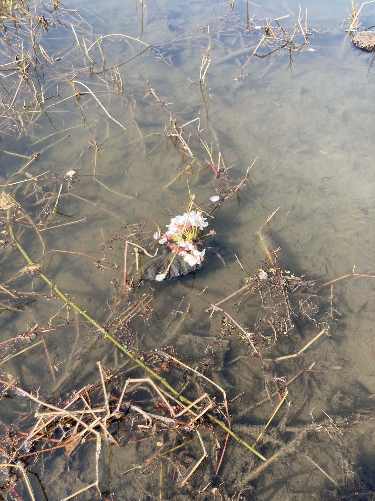
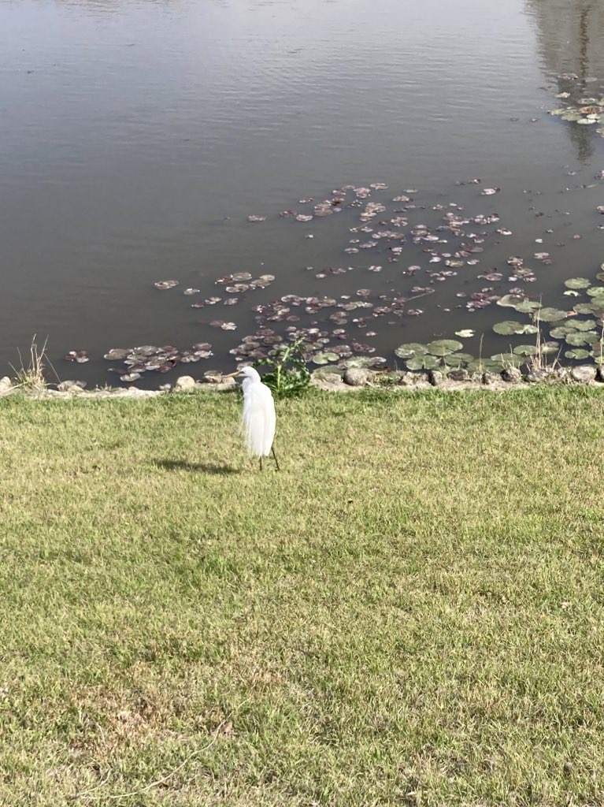

2023/04/11 22:57
昨日から授業が始まる． 最初は，a先生の授業． 研究室内でやりたい感じだったが，一人杉本の人が履修していると聞いていて， どうするか悩んでいた．物性の人だそうで，CFTかSUSYの本をゼミでやるといったら帰っていった． すると，研究室の人しかいないので，研究室のことをするが，来週はプランがないので私がSUSYQMの基本的なところを喋ることになる． とりあえず，来週までにWitten modelあたりを1時間半分用意しないといけないようである．
3限は，取るかどうか迷っているが，物性理論の講義にでる． 量子力学しかやらなかったので，何をするのかわからなかった． 加藤さんの物性で勉強したのでとらなくて良いか．
夜は，杉本の理論グループの花見に行く． 圧倒的にアウェーだったが，関わるであろう新M1とは喋れた． nさんがリベットを持ってきてくれて，(学生さんのためだったらしいが開けていたので)少し拝借したが，とても美味しかった． ピザを一切れしか食べれなかった． 日が沈んで暗くなってからはお茶部屋に移動して，11時すぎまで喋って帰宅．
今日は3限は場の理論の講義． 量子力学のpath integralをやった． 杉本のほうの図書館を散策して，髪を切りに行って，北花田のイオンモールまで歩くなど． 無印良品でたくさん買い物をした． fさんに教えてもらった中百舌鳥駅前のべらしおで塩ラーメンをたべて帰る．
2023/04/09 01:50
7日．二日酔い． 学生証を貰いに行き，早速ミールクーポンで昼食を取る． 600円くらい． 残りを売店で使ったらよいかと思ったが，売店では使えないようだ． 中百舌鳥キャンパスの食堂は授業期間でも15時くらいまでしか空いていないので，800円使い切るのが大変そう．
同期のkくんがゼミをしている間，もっぱらPCの設定をする．Windowsを久々に使うが，拡張子がデフォルトで隠されていることに驚く．wslやInconsolataのフォントをインストール． その後はPeskinの復習をする． diagramの数を数えるとき，前は${}_mC_n$で計算すると思っていたが，例えば$\phi^4$ theoryでは一つの組を選ぶ方法がまず$m-1$個あって(なぜなら適当に選んだものの相手はその他の$m-1$とおり)，次を選ぶ方法が$m-3$個あって・・・となっていくので$m!!$で数える．たとえば$\lambda^1$の項は$\langle \phi_x\phi_y\phi_z^4\rangle$だから$5\cdot3\cdot1 = 15$となり計算できる．$\lambda^3$の項も調べた．
21:00くらいまで研究室にいて，夕食は外食にしようと思う． 駅前のカレー屋と中華屋が22:00までやっているとgoogle mapに記載されていたので行ってみたが 見事にしまっていて，結局大学前まで戻りのインドネパールのカレー屋に行く． 1000円したがナンが大きくて美味しかった．
今日は朝から洗濯を2回回し掃除をして15:00ごろ大学に行く． kくんとiさんとa先生が複素幾何のゼミをしていた．土曜日もゼミをやっているのすごい． コーヒーを飲みながらPCのセットアップの続き． wslのフォントは昨日直したつもりだったのだが，閉じると元に戻ってしまうようで，ターミナルの方でフォントを変えて， 起動時にwslが動くようにして解決． 昨日入れたはずのtexliveも上手く入っていなかったので入れ直す． ひとまずこれで最低限は整ったので，これ以上はこだわらないようにしよう．
ちょうどkくんも定期ミーティングに(なぜか)参加するようになっていて，今日事前レクチャーを聞いていた． 気になっていたgeneralized Jacobi identityから制約を導く所を議論する． 先生の言っていた方法では上手くいかないと思っていたが，いけるのではないかと思う．
今日は那須川天心のボクシングデビュー戦で，kくんも格闘技を見るらしく意外に盛り上がる．
今日も夜は外食で，前にfさんとlさんから教えてもらった花梨麻婆豆腐に． 麻婆丼を食べて，麻婆豆腐は美味しかったが，米はところどころ塊．
そういえば，昨日あたりから動悸が気になる．パニック障害が再発していなければよいが． 少し体調に気をつけよう．
2023/04/06 21:53
今日は花見．旧府大の理論研+光物性研の4研究室で花見をする伝統があるらしい．朝は早く起きて軽食を取る． 連絡が来るはずだったが，連絡がこないのでとりあえず大学にいって集合してから白鷺公園に向かう． あとで気づいたが，u-toyamaのアドレスにメールが来ていた．どうにかならないかしら． 引っ越しに来た1日の時点で桜は満開で，もう散ってしまっていると思っていたが，多少葉桜になりかけてはいるものの まだ桜は残っていてすこし驚いた． 寿司とお酒が用意されていて，ちびちび食べるなど． お酒はビール缶程度に留めておいた． 全員の自己紹介をするのが主なイベントで，ぐるっと自己紹介を回したが，あまり覚えている人はいない． 他大学から来たのが自分だけで，ほかは内部の子たちでコミュニティーが出来ていたので， とくに仲良くなる人はいなかった． 教員とか先輩とかに心配してもらったが，そこまで気にしていないので申し訳なくなった．
そこまで酔っていなかったので，研究室に行って，もらったwindows PCのセットアップ． とりあえず，firefoxとvimを入れた．
夜は飲み直し．ゴードンジンを開けてジントニックを飲む． フィーバーツリーとシュウェップスのトニックウォーターで飲み比べ．前者のほうが甘さ控えめだった． ついでにいつものティーチャーズハイボールも飲んで結構酔って寝る．
2023/04/05 21:12
昨日は昼頃から研究室に行く． 食堂を初めて使ってみる．米が多く，276円よりも高い主菜があったのが富山大との大きな違いか．味噌汁が44円でびっくりしたが，どこもこの春休みに11円値上げしたらしい．
15:00から，a先生の講義を受ける．研究ミーティングが近々あるので，最低限知っていてほしいことを伝えられた． といっても，線形代数の復習からで既知のことも多かったし理解の仕方が似ていたので とても聞きやすかった．そもそもトークが上手い． 富山大にいたときはこんなにマンツーマンで二時間も指導してくれるなんて想像も出来なかったので， 研究テーマは降ってくるし，面倒見も良いし，良い研究室に来たものだ．
学生部屋ではiさんにも会えて，いろいろ教えてもらった． やはり別キャンパスの数理と交流を持つのが良いらしく， 来週花見に誘われたので行くことにした．こんなことも前では考えられない．
大学の情報課のバイトは，新入生だからという理由で落とされて残念．
今日も昼頃から活動． まず，数理のゼミの内容をnさんに問い合わせたら，10章からだから厳しいと言われていた所だったが， 今年はなぜか5章かららしくちょうどよいと言われせっかくなので参加することに． ところが，形式的時間割がかぶって履修できないので，教務課に問い合わせてみる． 無理だと言われたが，ごねて，nさんに時間割自体を変えてもらうように頼むなど．
その後は研究室用のマグカップを買いに1kmほど離れたseriaに買い出し．帰り道に酒屋が合ったのでティーチャーズとゴードンジンとトニックウォーターを買う． 高かったが，良いと聞くので一本フィーバーツリーを買う．
大学に来て，昨日教えてもらった．のよくわからなかった，ドット積の制約条件をもう一度やってみる． Jacobi identityをgradingの添字をa, c, bの順番で書いて，もとのa, b, cの順のものをこれに合わせて比較すればよかった．
すこし掃除をして変える．明日は花見だ．
2023/04/03 23:58
1日．引っ越し1日目．大きい荷物を中心に軽トラに載せて父親に運んでもらう． 素人が荷物を組んだので，途中で落ちないか心配だったが，なんとか無事ついたが， 父親は神経をすり減らしていた． 昼は，以前不動産屋さんがおすすめしていた駅前の中華に行く．少し高いが野菜が多くてよかった． 荷物を一通り入れると，親は疲れて帰宅． 私は大阪に残る．
家の裏は白鷺公園という大きな公園になっていて，とてもぎっしり花を咲かせる桜が 道沿いにズラッと並んでいて，絶好の花見スポットになっていた．
|  |  |
|  |  |  |
夜は何をたべようかと思い，大学近くに住んでいると聞いていた知人二人におすすめの 店を聞いてみると，fさんから返信がありちょうど食事にいくかもと言っていたので，一緒にどうかと誘ってみる． ネット上での知り合いだったので，どうかと思ったが良い反応をくれたので駅前の洋食屋に行く． 帰って，ABCに出たがモチベーションが低かったので悲惨な結果に．
2日． 朝から親が来て，小物を搬入する． 昼は親とは別になか卯で済ませ，オリエンテーションに． 親にはlくんから聞いたおすすめの店を教える． オリエンテーションは一瞬で終わり，同期のkくんと会い履修と研究室のことを聞く． 履修のことでmさんにも相談するなど．初めて喋ったが良い感じの人だった．
夜は自炊をしようとするが，食器を洗ったり調味料が揃ってなかったし，ほうれん草を買ってしまってとても大変だった．ほうれん草はずっと冷凍のやつでいいや...． 二食分作る．
3日． 朝は昨日つくったのこりを食べる．
教員に昼からアポを取っていたので，居室に行って履修の相談と修士で何をするかの相談． すると，研究内容を説明してくれて，科研費が当たったから$\mathbb{Z}_2^{N}$対称性を持った可積分系をやってみないか，とのこと． 興味があると行ったら，近々ブラジルの共同研究者とミーティングをするので， 明日基礎知識のレクチャーを受けることになった． 思ってもいない急展開にびっくり．
学生部屋の机周りを掃除して，環境を整える． 水回りはものすごく汚いが，とりあえず放っておく． 帰りにfさんのおすすめの一つベリーグッド麺に行って，つけめんを食べる． とても美味しい．